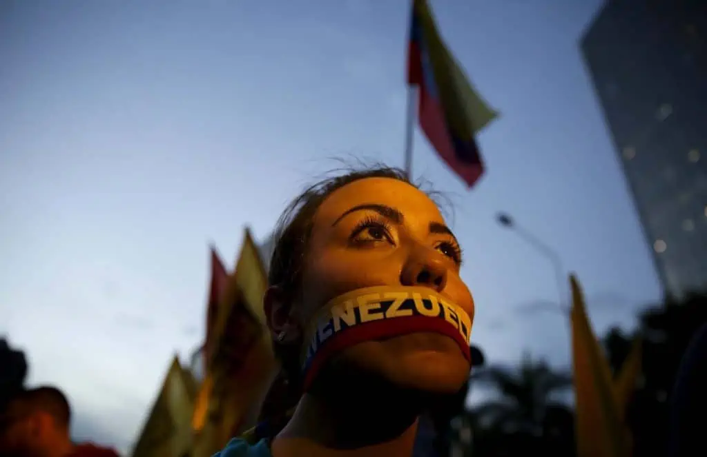

Libertad de expresión en Venezuela: estado de la cuestión y líneas de actuación
Septiembre 02 del 2022
Declaración conjunta de Relatores de ONU y CIDH sobre libertad de expresión en Venezuela
Washington D.C., Ginebra, 30 de agosto de 2022,

Los Relatores sobre libertad de expresión de Naciones Unidas y del Sistema Interamericano se han reunido en el marco del evento “Libertad de Expresión en Venezuela. Estado de situación y líneas de acción”, realizado el 2 de agosto de 2022, para reflexionar sobre la situación actual de Venezuela y reconocer la creciente necesidad de compromiso y acción para garantizar plenamente el derecho a la libertad de expresión en ese país.
Existen preocupantes limitaciones al ejercicio de la libertad de expresión en Venezuela, marcadas por el hostigamiento y persecución a voces disidentes, en particular a periodistas, comunicadores y medios independientes, así como a líderes sociales y defensores de derechos humanos. También se han informado medidas restrictivas en el espacio digital en Venezuela, en particular a través de cortes injustificados de Internet y bloqueos de contenido contra medios de comunicación independientes. El cierre de medios de comunicación y/o la incautación de sus equipos, ordenados por el gobierno, limitan cada vez más el acceso de los ciudadanos a información confiable de fuentes independientes, al tiempo que acentúan un ambiente general de autocensura entre los medios.
Preocupa especialmente el uso del derecho penal contra los medios de comunicación, incluidos los delitos de traición a la patria o terrorismo, y la aplicación reiterada de la Ley contra el Odio de 2017. Esta Ley establece multas y hasta 20 años de prisión para quien difunda a través de medios tradicionales o redes sociales información considerada “intolerante”. Dicha ley también otorga a las autoridades mayores potestades legales para bloquear contenido digital que se considere contrario a sus estándares.
El derecho a la libertad de expresión es esencial para la protección y promoción de la democracia y el Estado de Derecho. Los medios de comunicación libres, independientes y pluralistas son fundamentales para que una sociedad democrática tome decisiones informadas, para que los gobiernos, las instituciones y las personas respondan por sus actos, y para que opiniones diversas puedan sea escuchadas. Poder trabajar en seguridad permite a los periodistas cumplir con su papel fundamental como fuente de información objetiva e imparcial.
Anunciate
QUIERES QUE TU ANUNCIO SEA VISTO POR 50.000 USUARIOS POR DÍA